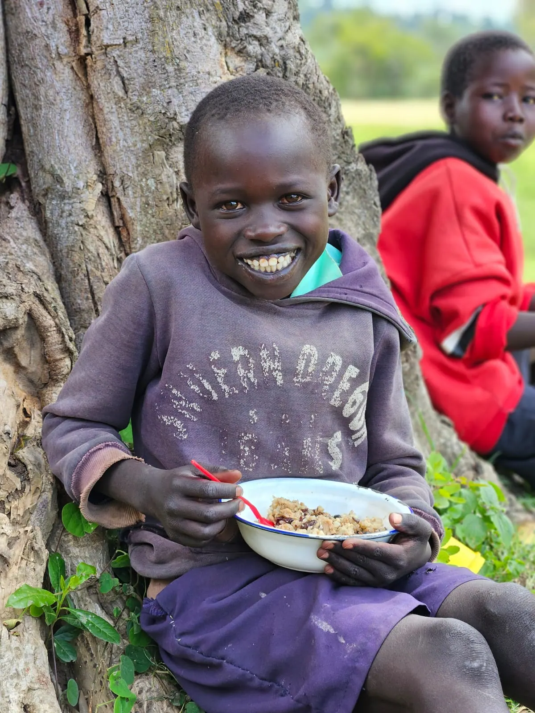
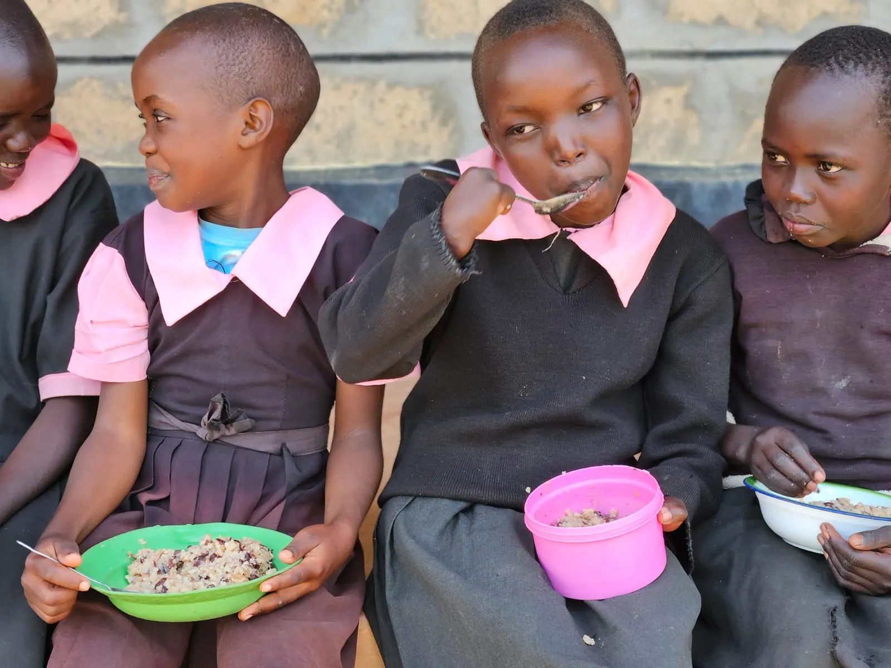
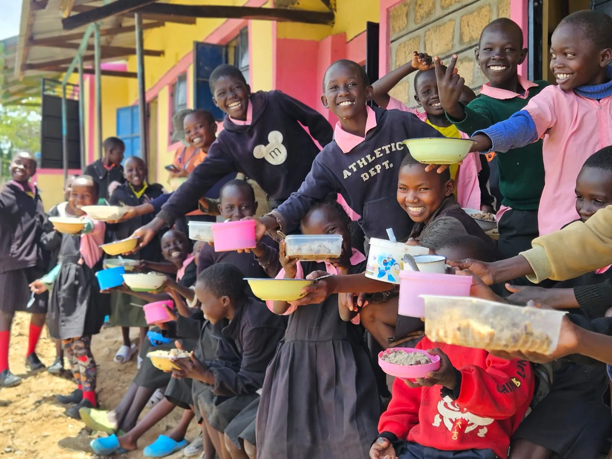

Photo gallery
West Pokot County
Scenes from school feeding, community meetings and field work across West Pokot County, 2024 to 2025.



Scenes from school feeding, community meetings and field work across West Pokot County, 2024 to 2025.